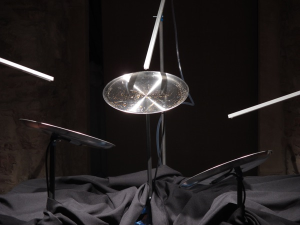
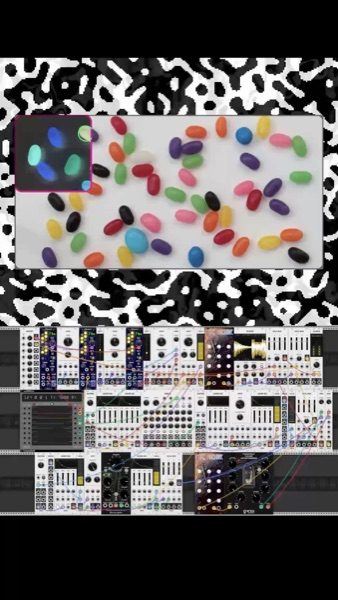

Rains of the Anthropocene
A generative sound installation that explores the erosion of the Earth's hydrological cycles through human presence. Physical droplets turn into a melodic baseline derived from historical precipitation data.
sound / installation / performance / audio-visual
Where technical skills meet creative vision. This space showcases experiments in algorithmic visuals, sound design, and artistic applications of programming.

A generative sound installation that explores the erosion of the Earth's hydrological cycles through human presence. Physical droplets turn into a melodic baseline derived from historical precipitation data.

An immersive performance engaging with accumulation, construction, and constant growth, framed within a dystopian reflection on consumerism and expansion.

Generative sound from a modular system in VCV Rack, driven by colour data from a synchronized TouchDesigner patch.
code as art / generative design / visual computing / creative technology / digital expression